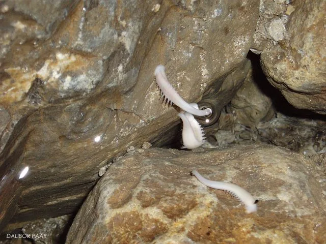

Pijavica Croatobranchus mestrovi
Pijavica Croatobranchus mestrovi stigobiontni je organizam koji živi isključivo u podzemnim vodama i potpuno je prilagođena životu u podzemlju. Do sada je pronađena samo u četiri duboke jame na sjevernom Velebitu: u…

Pijavica Croatobranchus mestrovi stigobiontni je organizam koji živi isključivo u podzemnim vodama i potpuno je prilagođena životu u podzemlju. Do sada je pronađena samo u četiri duboke jame na sjevernom Velebitu: u Lukinoj jami (gdje je pronađena prvi puta 1994. na dnu na dubini -1392 m), Slovačkoj jami, jami Olimp i jamskom sustavu Velebita. Pronađena je na različitim dubinama, uglavnom ispod 500 m, najčešće pričvršćena na stijeni u slabom vodenom toku ili u nakapnicama s tekućom vodom temperature 4-6 °C. Tijelo pijavice je spljošteno, dugačko 25 do 45 mm i široko oko 10 mm, s deset pari bočnih škrgolikih nastavaka, nalik na stabalca koralja. Spomenuti nastavci specifični su za ovu podzemnu pijavicu, a pretpostavlja se da imaju ulogu u opskrbi kisikom. Pijavica je mliječnobijele do žućkaste boje, bez uočljivih očiju, dvospolna. Na prednjoj strani tijela ima manju, a na stražnjoj veliku prijanjaljku (promjera i preko 1 cm). Kreće se naizmjeničnim prihvaćanjem prijanjaljkama za podlogu (stijenu) i izduživanjem tijela. Vrlo često boravi pričvršćena stražnjom široj prijanjaljkom usmjerena prednjim dijelom prema strujanju vode uvijajući se kao da nešto hvata. O životu pijavice još se uvijek vrlo malo zna.
Prvi znanstveni naziv ove pijavice je Croatobranchus mestrovi. DNA analizama je utvrđeno da Croatobranchus pripada rodu Erpobdella, ali su je Sket i suradnici ipak stavili u zaseban rod Croatobranchus zbog velikih razlika u morfologiji i staništu (Sket i sur. 2001). Poslije su neki autori ipak predložili promjenu roda u Erpobdella, pod argumentom da je DNA presudan (Oceguera-Figueroa i sur. 2005). Međutim, Sket i suradnici dalje koriste prvotni naziv, temeljem gore navedene argumentacije (Sket&Trontelj 2008).
[caption id="attachment_3405" align="alignleft" width="242"] Kerovec i sur. 1999.[/caption]Detaljan morfološki opis podzemne endemske pijavice Croatobranchus mestrovi sp. n. dali su Kerovec i sur.(Kerovec i sur. 1999) te ga ovdje navodimo:
Duljina tijela tri nađena primjerka (1994. godine) iznosi od 40 do 45 mm, širina tijela od 10 do 12 mm bez ili od 16 do 18 mm sa bočnim škrgolikim nastavcima. Prednji kraj tijela konzerviranih jedinki malo je zadebljao i okrugao. Kod živih jedinki primijećeno je pet zvjezdasto raspoređenih ispruživih pipala. Ždrijelo je bez zubića ili rila. Na stražnjem kraju tijela nalazi se velika prijanjaljka, čiji promjer prelazi 10 mm. Tijelo je dorziventralno spljošteno. Na leđnoj strani tijela prije stražnje prijanjaljke nalazi se dobro vidljiv analni otvor.
Poput ostalih pijavica, tijelo je izgrađeno od 33 kolutića. Šesnaest središnjih kolutića, IX - XXIV, podijeljeno je na 5 jednako širokih prstenaka: b1, b2, a2, b5 i b6.
Prema krajevima tijela smanjuje se broj prstenaka: I, II, III - 1; IV,V - 2; VI, VII - 3; VIII- 4; XXIV - 3; XXV - 2; XXVI - 1. Posljednjih 7 kolutića XXVII - XXXIII sraslo je u stražnju prijanjaljku. Ukupno ima 103 prstenka. Na kolutiću XII vidljivi su spolni otvori, međusobno udaljeni 2,5 prstenka. Muški spolni otvor smješten je u sredini prstenka b2, a ženski između prstenka b5 i b6.
Na bočnim stranama XIV - XXVI kolutića, kao ispupčenja srednjeg prstenka (a2), nalazi se 13 pari bočnih škrgolikih nastavaka, nalik na stabalca koralja. Prvi i posljednji par znatno su manji od ostalih 11, čija dužina dosiže 3 do 4 mm. Još nije moguće sa sigurnošću utvrditi funkciju bočnih škrgolikih nastavaka. Može se pretpostaviti da bi mogli imati ulogu u opskrbi pijavice kisikom, kojeg u podzemnim vodama ima malo, a koja se odvija preko površine tijela.
Prema bitnim obilježjima pijavica Croatobranchus mestrovi sp. n. nedvojbeno pripada redu Pharyngobdellae. Isto tako pokazuje znatnu bliskost s porodicom Erpobdellidae, ali ju od nje jasno razlikuje prisustvo bočnih škrgolikih nastavaka. To je i osnovni razlog što je svrstana u novu porodicu Croatobranchidae, jer je to prvi kriterij za određivanje europskih porodica unutar skupine Rhynchobdellae (po A. Minelliu). Za determinaciju vrsta i nekih viših sistematskih kategorija pijavica, posebno kod porodice Erpobdellidae, često se koristi izgled genitalnog aparata. Međutim, upravo kod pijavica ta je varijabilnost izuzetno velika, pa je njegov značaj za determinaciju upitan (po B. Sketu).
Prema anatomskoj građi i analizi genske sekvence 18S rRNA, (Sket i sur. 2001) odredili su filogenetski položaj unutar porodice Erpobdellidae, iz kojeg se vidi da je ovaj rod vrlo blizak rodu Dina. Vrsta je dobila ime po akademiku Milanu Meštrovu, redovnom profesoru Prirodoslovno-matematičkog fakulteta Sveučilišta u Zagrebu, jednom od pionira i pokretača istraživanja podzemne, prvenstveno intersticijske faune na području Hrvatske.
Croatobranchus Mestrovi (Erpobdellidae). Jamski sustav Velebita, -580 m. Foto: D. Bakšić [gallery ids="3417,3418,3419,3420,3421,3422,3423,3424,3425,3426,3427" type="rectangular"] Literatura: Kerovec, M., Kučinić, M., Jalžic, B., 1999.: Croatobranchus mestrovi sp. n. -predstavnik nove endemske podzemne vrste pijavica. Spelolog 44/45, 35–36. Oceguera-Figueroa, Alejandro , León-Règagnon Virginia, Siddall, Mark E. 2005.: Phylogeny and revision of Erpobdelliformes (Annelida, Arhynchobdellida) from Mexico based on nuclear and mithochondrial gene sequences. Revista Mexicana de Biodiversidad 76 (2): 191-198. Sidall, Mark E., 2002.: Phylogeny of the leech family Erpobdellidae (Hirudinida : Oligochaeta). Invertebrate Systematics, 16, 1–6. Sket, B., Dovc, P., Jalžić, B., Kerovec, M., Kučinić, M., and Trontelj, P, 2001.. : A cave leech (Hirudinea, Erpobdellidae) from Croatia with unique morphological features. Zoologica Scripta 30, 223–229. Sket, B., Trontelj, P., 2008. Global diversity of leeches (Hirudinea) in freshwater. Hydrobiologia, 595: 129-137. Priredili: Darko Bakšić i Dalibor Paar